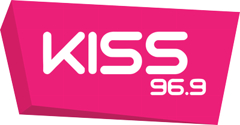

홈 > 브랜드 매거진 > Kiss FM
Kiss FM
Kiss FM는 2026년에 기록된 Recently added 계열의 브랜드 아이덴티티 사례입니다. NOT Wieden+Kennedy가 아이덴티티 작업의 디자이너로 기록되어 있습니다. 로고, 타입, 컬러, 아트 디렉션, 애플리케이션 섹션으로 구성된 시각 시스템입니다.
산업 분야 브랜드·비즈니스 · 공개 등급 편집 검수 · 브랜드 평가 4 ★

한눈에 보는 브랜드
브랜드 관점
공개 메타데이터와 에셋 요약을 기준으로 아이덴티티 구조를 확인할 수 있습니다.
시작과 성장
키스는 1985년 10월 7일 런던 남부에서 시작된 해적 라디오 방송국으로 출발했다. 고든 맥 맥나미와 조지 파워, 토스카 잭슨이 함께 세웠고 면허 없이 94 주파수로 송출하며 댄스와 소울, 힙합을 틀었다.
정점에는 청취자가 50만 명에 달했다고 전해진다. 1989년 12월 두 번째 시도 끝에 면허를 받아 1990년 9월 1일 키스 100이라는 이름으로 합법 방송을 개시했다.
첫 곡은 코코아 티와 샤바 랭크스의 파이러츠 앤섬이었다. 이후 영국 최대 댄스음악 라디오 브랜드의 하나로 자리 잡았고, 현재는 바우어 미디어 오디오 영국 법인이 운영한다.
해적 방송 시절의 거리 문화와 클럽 음악 정서가 브랜드의 뿌리로 남아 디자인 아카이브 관점에서 반항적 출발점을 보여준다.
제품과 서비스
메인 방송국 키스를 중심으로 키스토리, 키스토리 알앤비, 키스 댄스, 키스 엑스트라 같은 하위 채널이 하나의 시스템으로 묶인다. 2026년 4월 디자인 스튜디오 낫 위든 케네디가 진행한 리브랜드는 20년 된 각진 로고를 버리고 키스 동작처럼 부풀어 일그러지는 유동적 워드마크를 도입했다.
디지털 메시지의 작별 표시인 엑스 기호가 핵심 모티프이며, 보라와 분홍, 노랑, 파랑을 오가는 강렬한 색과 고대비 이미지가 화면과 애니메이션에서 반응형으로 움직인다.
사람들
현재 상태
리브랜드는 미스치프 앰플리파이드라는 슬로건 아래 디지털 우선 세대를 겨냥한다. 위든 케네디 런던의 캠페인과 더세븐스타스의 미디어 전략은 전통 스튜디오를 벗어나 스포티파이와 우버, 틴더 같은 플랫폼과 거리로 확장됐다.
옥스퍼드 스트리트 플래널스 건물 디지털 스크린 점거, 네온 분홍 트럭에 실린 투명 스튜디오 같은 활성화로 거리에서 직접 드러난다.
타임라인
BI/CI 변천사
확인된 BI/CI 이미지가 아직 없습니다.
함께 읽을 브랜드
 브랜드·비즈니스 · 편집 검수Time
브랜드·비즈니스 · 편집 검수TimeTime는 2023년에 기록된 Designed by For the People 계열의 브랜드 아이덴티티 사례입니다. For The People가 아이덴티티 작업의 디...
YO
YO!
브랜드·비즈니스 · 편집 검수YO!YO!는 2016년에 기록된 Designed by Paul Belford Ltd 계열의 브랜드 아이덴티티 사례입니다. Paul Belford Ltd가 아이덴티티 작업...
St
Story Espresso
브랜드·비즈니스 · 편집 검수Story EspressoStory Espresso는 2021년에 기록된 Designed by For the People 계열의 브랜드 아이덴티티 사례입니다. For The People가 아...
Be
Betta
브랜드·비즈니스 · 편집 검수BettaBetta는 2026년에 기록된 Recently added 계열의 브랜드 아이덴티티 사례입니다. Midday가 아이덴티티 작업의 디자이너로 기록되어 있습니다. 로고,...
Bl
Blank&
브랜드·비즈니스 · 편집 검수Blank&Blank&는 2026년에 기록된 Recently added 계열의 브랜드 아이덴티티 사례입니다. Werklig가 아이덴티티 작업의 디자이너로 기록되어 있습니다. 로...
Fl
Flat
브랜드·비즈니스 · 편집 검수FlatFlat는 2026년에 기록된 Recently added 계열의 브랜드 아이덴티티 사례입니다. Werklig가 아이덴티티 작업의 디자이너로 기록되어 있습니다. 로고,...
Po
Pot Gang
브랜드·비즈니스 · 편집 검수Pot GangPot Gang는 2026년에 기록된 Recently added 계열의 브랜드 아이덴티티 사례입니다. Land of Plenty가 아이덴티티 작업의 디자이너로 기록되...
Pa
Paws Off!
브랜드·비즈니스 · 편집 검수Paws Off!Paws Off!는 2023년에 기록된 Designed by Seachange 계열의 브랜드 아이덴티티 사례입니다. Seachange가 아이덴티티 작업의 디자이너로...